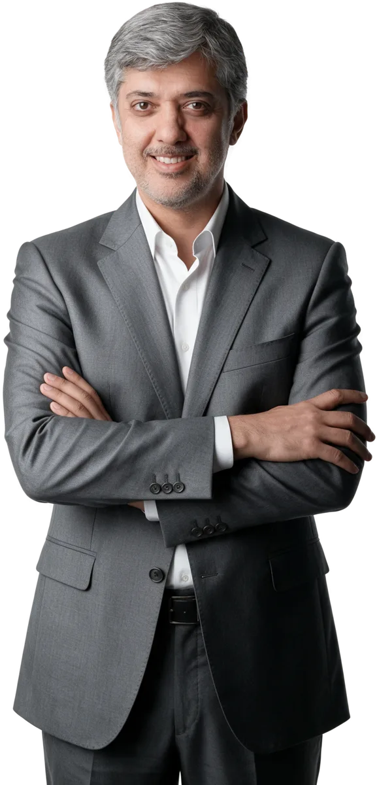

قرآنی که فقط خوانده نمیشود،
بلکه در زندگی جاری است.

دکتر جواد فروغی
قاری و مفسر قرآن کریم، سخنران و پژوهشگر. هدف او این است که مفاهیم قرآن با زبان ساده و امروزی فهمیده شود.
مؤسسه سفیران
سفیران روانشناسی را با آیات قرآن کریم پیوند میزند (قرآنتراپی) و در کنار آن از اشعار مولانا هم کمک میگیرد؛ برای پاسخ به دغدغههای روحی انسان امروز، از راه کلاسهای آموزشی و جلسههای مشاوره.
- بیش از ۲۷۰ هزاردنبالکننده در اینستاگرام
- آنلاین و حضوریکلاسها و مشاورهها
- ۴ خدمتآموزش و مشاوره